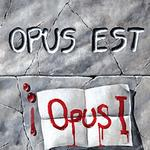

Home Artist links Label link

Opus Est - Opus I
| Artist: | Opus Est |
| Title: | Opus I |
| Label: | Musea FGBG 4478 |
| Length(s): | 68 minutes |
| Year(s) of release: | 1983/2003 |
| Month of review: | [01/2004] |
Line up
Hakan Nilsson - vocals
Leif Olofsson - synths, organ, piano
Anders Olofsson - drums, percussion
Kent Olofsson - bass, all guitars, vocoder
Tracks
| 1) | The Bonfires | 4.18
|
| 2) | Ventis From Tradere | 5.56
|
| 3) | A Walk After Dark | 6.43
|
| 4) | Times | 8.39
|
| 5) | Miss Gee | 4.41
|
| 6) | O What Is That Sound | 7.40
|
| 7) | If I Could Tell You | 2.32
|
| 8) | Mirrorcle | 9.46
|
| 9) | Another Time | 5.02
|
| 10) | The Witnesses | 8.42
|
| 11) | No Change Of Place (Recorded Live!) | 6.47
|
Summary
The music
I am amazed, truly amazed. The sound of the music on this record is so early nineties neo, especially akin to Chandelier. Inspecting the info, however, made it clear that this album was originally released in 1983. These Swedes were years and years ahead of their time in making something that is very Very VERY neo. Now, that is quite a feat. There's a downside too: the music's very synthy, the rhythms are pop, not prog. The vocals are unimpressive at best, German sounding (which is odd, for Swedes), very thin and pretty insecure, off key at times even. The bio speaks of a vocal likeness to Peter Hammill. How dare they.
The disc contains the original Opus I album with three bonus tracks added. Another Time is ballad like, and is far less neo than the rest of the material, by far the best of the album, without actually being good. The other two bonus tracks fit in right away with the original album, but the final track has bad sound and features a lot of feedback. Okay, the bridge is a decent bit, but I still don't see why something sounding as poorly (technically) should be included.
Conclusion
It's becoming increasingly difficult to come up with good unreleased material from before the CD era. Unfortunately this results in a lot of poor material, that had better be left untouched, being released. This release contains such material. If you like the neo prog sound of the early Chandelier, or a bit of (very) old Galahad you might enjoy this. Most people won't want to hear this, though. I must say that I found listening through it a bit of an ordeal.
© Roberto Lambooy